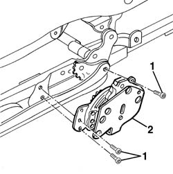
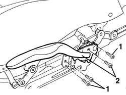
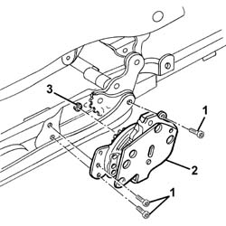
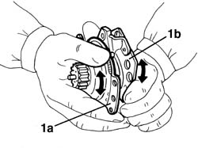
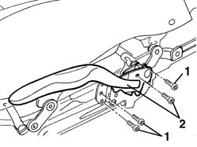

7045a36 drivers seat manual height adjustment device - r r
- Path
- Procedures > 70 FITTINGS > 7045 FRONT SEATS > 7045A front seat assembly > 7045a36 drivers seat manual height adjustment device - r r
- Kind
- repair procedure (removal / refitting; the operation number is the code)
- Applies to
- all engines; all production periods
- Interactive page
- https://sloeber94.github.io/elrnDB-a156/en/#/3238869
Applies to: all engines; all production periods
 Removing
Removing
 Refitting
Refitting1. Unscrew the bolts
2. Remove the manual seat height adjustment device.

Applies to: all engines; all production periods
Refitting
RemovingCheck that the device is not damaged.
1. Fit the device in its seating.
If the sector gear does not line up with the toothed wheel, manually rotate the fixing plate (1a) as much as necessary in relation to the rotation plate (1b).
Applies to: all engines; all production periods
1. Tighten the screws.
2. Temporarily refit the lever on the device and check that it is working properly.

Applies to: all engines; all production periods
Remove the lever from the device.
Test the device is working properly.
Applies to: engines: 3.2 V6; all production periods; only with equipment: GTA
Removing
Refitting7045A10 l/h or r/h front seat (one) - r+r
1. Unscrew the bolts
2. Remove the manual seat height adjustment device.
3. Recover the bush.

Applies to: engines: 3.2 V6; all production periods; only with equipment: GTA
Refitting
RemovingCheck that the device is not damaged.
Place the bush in its housing.
1. Fit the device. If the toothed sector is not aligned, manually rotate the fixing plate (1a) as much as necessary in relation to the rotation plate (1b).

Applies to: engines: 3.2 V6; all production periods; only with equipment: GTA
1. Tighten the screws.
2. Temporarily refit the lever on the device and check that it is working properly.

Applies to: engines: 3.2 V6; all production periods; only with equipment: GTA
Remove the lever from the device.
Topics linked from this page (3)
- 7045A10 l/h or r/h front seat (one) - r+r
- 7045A24 squab knob - r r
- 7045a43 seat exterior guard - r r